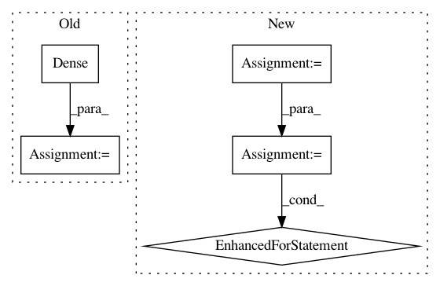

4b83c1070cebd0d996ba2cc69779dcb66d5d0032,autokeras/generator.py,DefaultClassifierGenerator,generate,#DefaultClassifierGenerator#Any#Any#,51
Before Change
output_tensor = pool(padding="same")(output_tensor)
output_tensor = ave()(output_tensor)
output_tensor = Dense(self.n_classes, activation="softmax")(output_tensor)
return Model(inputs=input_tensor, outputs=output_tensor)
class RandomConvClassifierGenerator(ClassifierGenerator):
After Change
ave = get_ave_layer_func(len(self._get_shape(3)))
pooling_len = int(model_len / 4)
model = StubModel()
model.input_shape = self.input_shape
model.inputs = [0]
model.layers.append(StubInput())
for i in range(model_len):
model.layers += [StubBatchNormalization(),
StubActivation("relu"),
StubConv(model_width, kernel_size=3, func=conv),
StubDropout(constant.CONV_DROPOUT_RATE)]
if (i + 1) % pooling_len == 0 and i != model_len - 1:
model.layers.append(StubPooling(func=pool))
model.layers.append(StubGlobalPooling(ave))
model.layers.append(StubDense(self.n_classes, activation="softmax"))
model.outputs = [len(model.layers)]
for index, layer in enumerate(model.layers):
layer.input = index
layer.output = index + 1
return Graph(model, False)
class RandomConvClassifierGenerator(ClassifierGenerator):
In pattern: SUPERPATTERN
Frequency: 3
Non-data size: 5
Instances
Project Name: keras-team/autokeras
Commit Name: 4b83c1070cebd0d996ba2cc69779dcb66d5d0032
Time: 2018-05-29
Author: jhfjhfj1@gmail.com
File Name: autokeras/generator.py
Class Name: DefaultClassifierGenerator
Method Name: generate
Project Name: keras-team/autokeras
Commit Name: 7f30b2403fadc4eaad48ceaf6154a626f477f8c8
Time: 2018-05-26
Author: jin@tamu.edu
File Name: autokeras/generator.py
Class Name: DefaultClassifierGenerator
Method Name: generate
Project Name: dmlc/gluon-nlp
Commit Name: b1b61d3f90cf795c7b48b6d109db7b7b96fa21ff
Time: 2019-08-04
Author: lausen@amazon.com
File Name: src/gluonnlp/model/attention_cell.py
Class Name: MultiHeadAttentionCell
Method Name: __init__